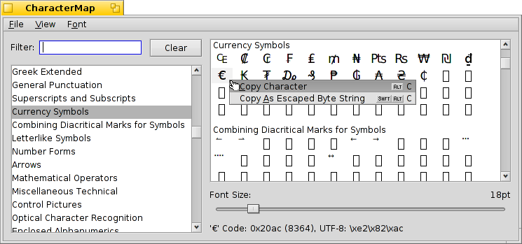

CharacterMap
CharacterMap
| Deskbar: | ||
| Location: | /boot/system/apps/CharacterMap | |
| Settings: | ~/config/settings/CharacterMap settings |
CharacterMap will show you the UTF-8 code of every character a font supports.
To the left you have the standardized blocks, together with a handy filter function. Optionally, you can choose to also from the menu. The right shows the actual characters in these blocks, using the font specified in the menu. Below that you can change the font size. And below that, the values of the character currently under the mouse pointer is displayed in hex, decimal and UTF-8 notation.
You can drag&drop a character directly from the character map into a text editor, or right-click on one to either (ALT C) or (SHIFT ALT C). Resulting in, e.g. either € or \xe2\x82\xac.